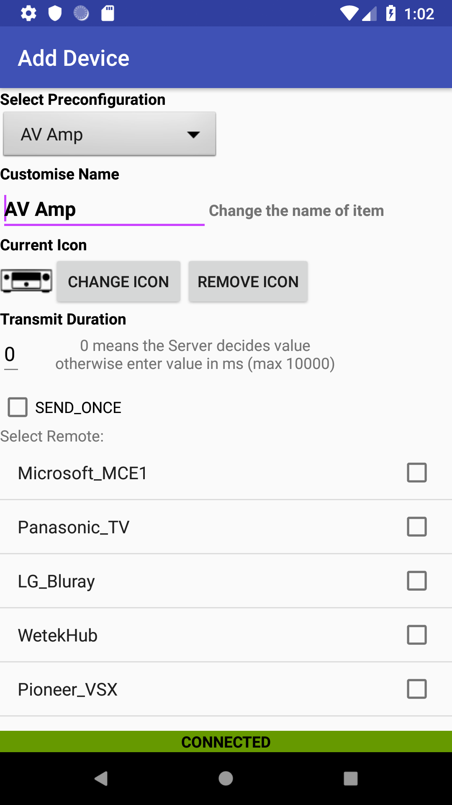

    <div class="container content">
      {% assign prev_page = "Navigation Menu" %}
      {% assign prev_href = "navigation.html" %}
      {% assign next_page = "Add Kodi Device" %}
      {% assign next_href = "kodidevices.html" %}
      {% include usergnav.html %}

      <div class="row">
        <div class="col-lg-7">
          <h2 class="page-title">Add Device</h2>
          <p>A Device emulates an existing remote control:</p>
          <p>To navigate to the <i>Add Device</i> view, click on the menu icon (&#9776;) at the top left corner of the main screen; then, in the Device section of the menu, click <i>Add</i>.</p>
          <p>Here you need to decide:</p>
          <ul id="bullets">
            <li>The name of the device you are adding,</li>
            <li>The icon that should be displayed in the <a href="navigation.html">Navigation Bar</a> for this item,</li>
            <li>The default transmit duration to be used for remote keys, and</li>
            <li>The LIRC Remote Control associated with this device.</li>
          </ul>
          <p>You can select a <i>pre-configuration</i> setting; if you do this then the Device name and icon will be automatically selected for you. Alternatively you can enter your own name for the Device and/or <a href="changeicon.html">select the icon</a> you want to use by pressing the <i>Change Icon</i> button. If you select <b><i>Kodi</i></b> here then the screen will change prompting you to <a href="kodidevices.html">add a kodi device</a>.</p>
          <p id="transmitduration">The <i>Transmit Duration</i> is the period of time (in ms) that the server will continuousely send an infra-red code (for each key of the device you are creating); or, you can select <i>SEND_ONCE</i>. You may need to experiment with this setting because the best value will depend on the actual device you are controlling. You change this setting in the <a href="editdevice.html">Edit Device</a> View and you can set a different value for each key in the <a href="editdevicekey.html">Edit Device Key</a> View.</p>
          <p>The bottom part of this view contains a list of devices (from the LIRC Subsystem); you should select the device you wish to control. </p>
          <p>Once you have populated all the required fields in this view, a <i>Done</i> button will appear. Press this to complete the process.</p>
          <p>Pushing the <i>Back</i> button at any time will cancel the operation.</p>
        </div>
        <div class="col-lg-5">
          <div class="row spacer6 d-none d-lg-block"></div>
          <p class="aligncenter"></p>
        </div>
      </div>
      {% include usergnav.html %}
    </div>
